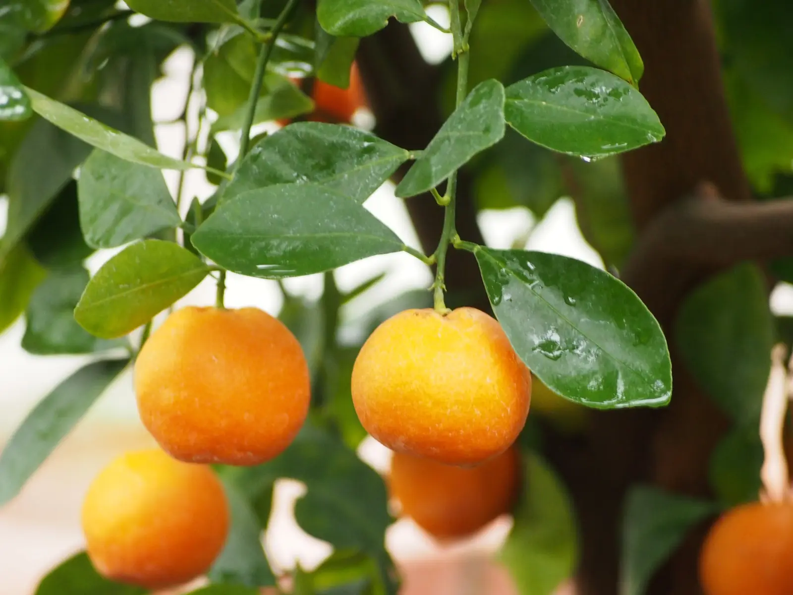

Mandarine u gajbi
Brane u sezoni, pakirane na dan berbe.
- Gajba 10 kg18 €
- Gajba 20 kg34 €

OPG Anđelić · Opuzen · od 2007.
Perica i Ivan Anđelić već dvadesetak godina uzgajaju neretvanske mandarine. Bez posrednika, s poznatim imenom iza svake gajbe.
Naša priča
Anđelići mandarine uzgajaju na plodnoj zemlji doline Neretve, u Opuzenu. Obiteljski OPG osnovan je 2007., a nositelj je Perica Anđelić. Uz njega je sin Ivan, koji danas vodi većinu razgovora s kupcima.
Godinama su mandarine isporučivali veletržnicama, a one su ih vozile na rusko tržište. Onda su došle sankcije i taj je put preko noći nestao. Umjesto da odustanu, okrenuli su se izravnoj prodaji i kvaliteti. Danas njihove mandarine stižu kupcima u Splitu, Zagrebu, Sloveniji i Češkoj.

Najljepše nam je vidjeti osmijeh i zadovoljstvo na licu kupca.
Perica Anđelić pokreće obiteljsko gospodarstvo u Opuzenu.
Veletržnice više ne otkupljuju kao prije. Tražimo vlastiti put do kupaca.
Prodajemo u Splitu, Zagrebu, Sloveniji i Češkoj, uz sokove, džemove i likere od vlastitog voća.
Novi nasad sorte Iwasaki već raste i uskoro proširuje našu ponudu.
Svježe mandarine
Različite sorte dozrijevaju jedna za drugom, pa slatkoću i miris mandarine možete uživati tjednima. Gajbu svaki put punimo sortom koja je upravo na vrhuncu.
Rana, početak sezone
Prva koja dozrije: nježna, sočna i vrlo slatka.
Listopad – studeni
Tanka kora, bez koštica, uravnotežena slatkoća.
Listopad – studeni
Ranozrela sorta, lako se guli i vrlo je aromatična.
Studeni
Zaokružen okus, idealna za svaki dan.
Studeni – prosinac
Kasnija sorta, intenzivnog okusa i boje.
Novi nasad · 500 stabala
Nova sorta u našem voćnjaku, uskoro u ponudi.
Iz naše ostave
Brane u sezoni, pakirane na dan berbe.

Naš najtraženiji proizvod. Hladno prešan i pasteriziran.

Kupina, marelica i malina, kuhani u malim serijama.

Likeri za svečane trenutke te kupine, maline, šipak, limun, smokve, trešnje, višnje i aronija prema sezoni.
Cijene su okvirne. Točnu ponudu i cijenu potvrđujemo pri narudžbi.
Kako uzgajamo
Tlo hranimo organskim gnojivima, da voće raste sporo i prirodno.
Štetnike hvatamo lovkama umjesto da ih prskamo bez potrebe.
Navodnjavanje kap po kap daje stablu točno onoliko vode koliko treba.
S pčelarima surađujemo na oprašivanju, kako bi nasad bio zdrav i rodan.
Sezona
Mandarine su zvijezda jeseni, a ostatak godine čekaju sokovi, džemovi, likeri i voće iz našeg voćnjaka.
Gdje nas pronaći
Nasadi su nam uz Neretvu, a mandarine putuju dalje: u Split, Zagreb, Sloveniju i Češku. Dođite i po gajbu na naš prag u Opuzenu ili nam javite grad pa ćemo dogovoriti dostavu.
Fotoalbum


Javite nam se
Napišite što Vas zanima, a mi ćemo Vam se javiti čim stignemo, obično isti dan. Poruka se otvara u WhatsAppu ili Viberu, spremna za slanje.
OPG Anđelić
Put Zlatinovca 17
20355 Opuzen